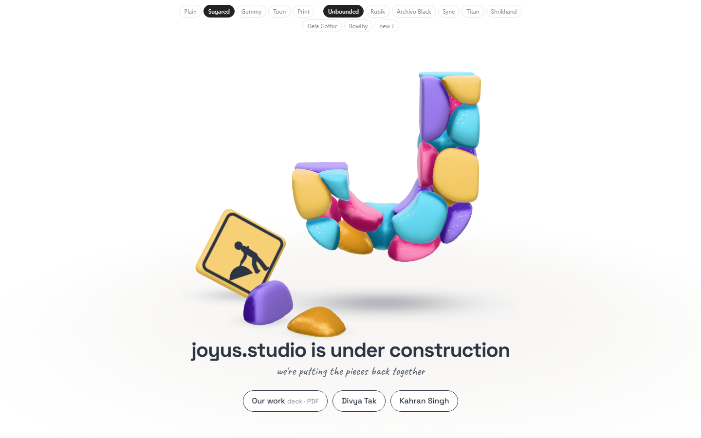
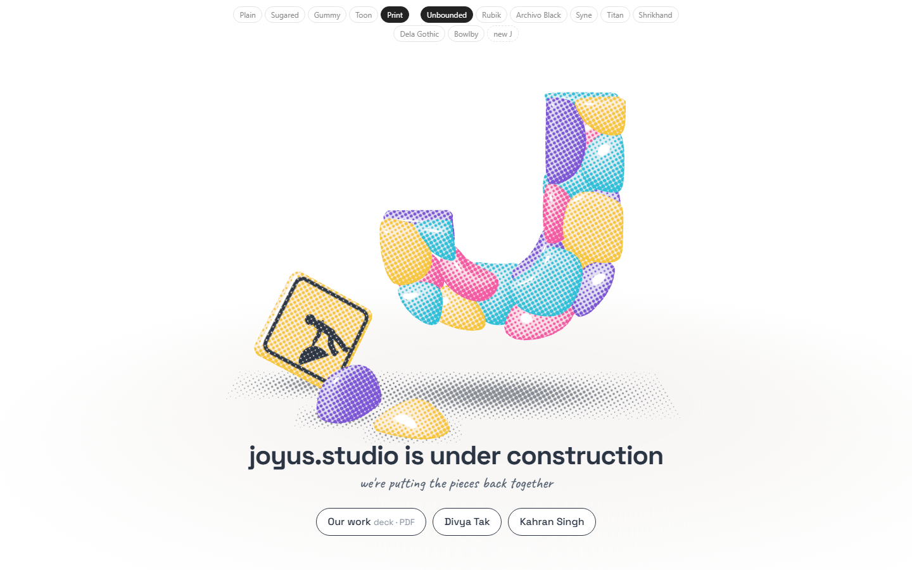
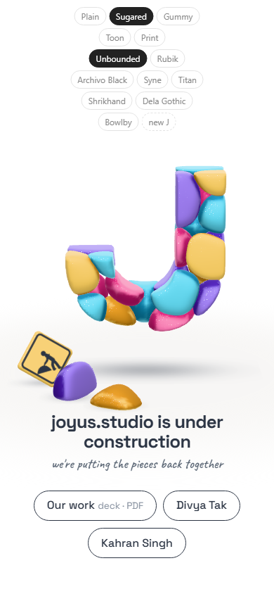
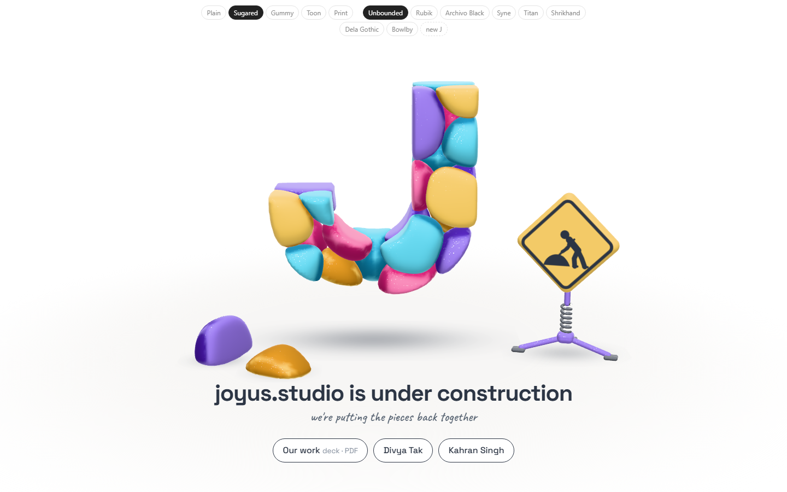
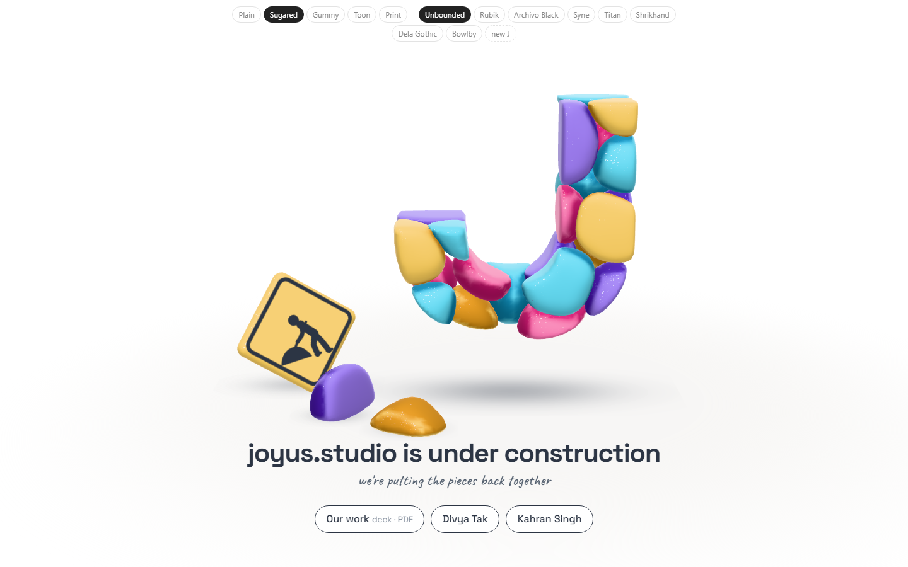

Study 24 · 6 October 2026
Sign on the ground
No stand. The sign leans back on the ground, left of the J, behind the fallen stones. Fonts and looks kept.
Open the page (fonts and looks at the top)


Steps


Open
- Which font? Which look?
- Deck link, your site's address, homepage only or every page.
Test: page-test.mjs, 54 checks in a browser (the sign rests on the floor, clear of the fallen stones; 8 fonts; Print screens the ink); read by check.cjs.